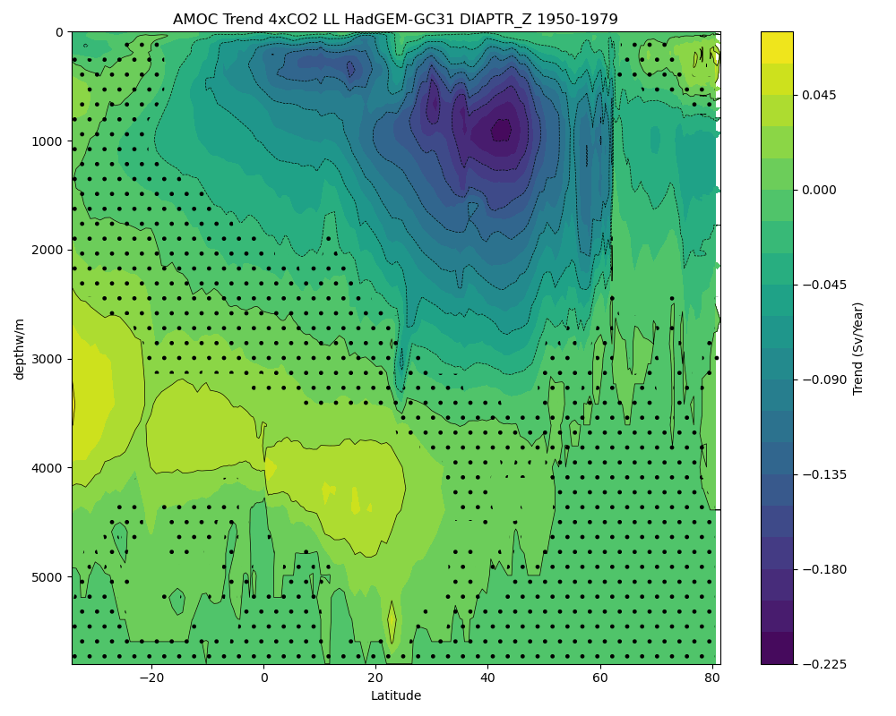

⬅ Back to gallery

AMOC on z levels EPOC LL Expts from DIAPTR- 4XCO2 ensemble mean trend 1950-1979
/gws/nopw/j04/epoc/dlrhodso/analysis/AMOC/AMOC_DIAPTR_AM_trends/AMOC_trend_AMOC_DIAPTR_AM_HadGEM-GC31_LL_abrupt-4xCO2_1950-1979.png